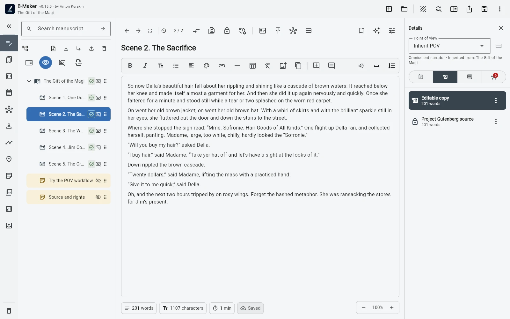

B-Maker хранит проект как переносимый .bmaker. На Windows можно работать с локальным файлом напрямую, а Web App позволяет скачать браузерный проект в том же формате.
Что здесь значит local-first
Рукопись, версии, планирование, комментарии, обложка, иллюстрации и издательские данные могут жить вместе в SQLite-файле .bmaker. Его можно хранить и резервировать привычными вам средствами.
Базовый доступ к тексту меньше зависит от учётной записи конкретного сервиса.
Чего local-first не обещает
B-Maker сейчас не заявляет автоматическую conflict-aware синхронизацию и real-time collaboration. Если проект переносится между устройствами, способ передачи и резервирования файла выбираете вы.
Контроль над файлом и удобный sync — разные возможности продукта, поэтому ограничение лучше обозначать прямо.
Зачем это автору
Большая работа может жить годами. Переносимый формат упрощает резервные копии, архивирование, смену компьютера и собственные правила хранения.
Если же нужен бесшовный многопользовательский cloud-first процесс, другой класс инструментов может подойти лучше.
Частые вопросы
B-Maker требует собственное облако?
Нет. Проект может оставаться переносимым .bmaker под вашим контролем.
B-Maker автоматически синхронизирует устройства?
Сейчас такой функции не заявляется; файл можно переносить через выбранное вами хранилище.
Связанные гайды B-Maker
Кроссплатформенная программа для письма — Windows, Mac, Linux и планшеты · Программа для написания книг на Windows — нативный local-first B-Maker · Программа для книг на Mac — браузерный сценарий B-Maker
Попробуйте этот процесс на реальном проекте.
Откройте B-Maker в браузере и начните с одной главы или статьи. Глубокие инструменты подключайте только тогда, когда они понадобятся проекту.